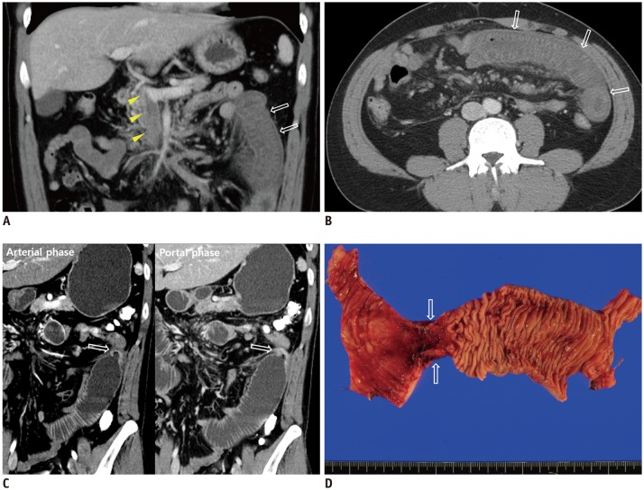
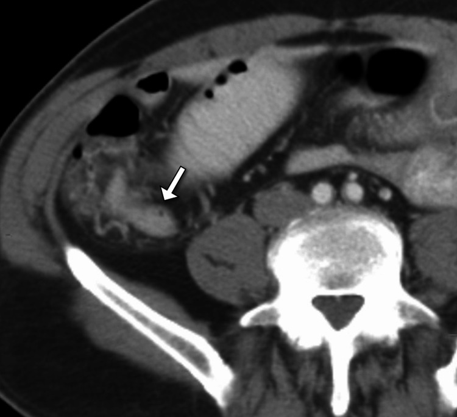
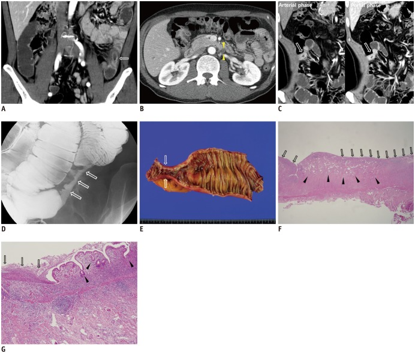

1847 — Hẹp ruột do thiếu máu sau nút mạch mạc treo: chẩn đoán CT và chọn nong bóng hay cắt nối / Post-ischemic bowel stricture
Tags: pattern:hep-ruot pattern:day-thanh-ruot pattern:giam-ngam-thanh pattern:thieu-mau-ruot pattern:tac-ruot vung:ruot-non vung:dai-trang vung:o-bung protocol:CT-bung-co-tuong-phan protocol:noi-soi-ruot-non
Mức chắc chắn (certainty): tổng hợp y văn (literature synthesis) — ghép 1 loạt 8 ca có mô bệnh về đặc điểm CT của hẹp sau thiếu máu (Korean J Radiol 2017, PMC5639159, CC BY-NC 4.0), 1 ca hẹp hồi tràng tận sau đặt stent động mạch mạc treo tràng trên (Cureus 2026, PMC12930115, CC BY 4.0), 1 ca hẹp hỗng tràng 3 cm sau huyết khối tĩnh mạch cửa–mạc treo (Case Rep Gastroenterol 2025, PMC12245150, CC BY-NC 4.0) và nền thiếu máu ruột của bài 1835. Không có thử nghiệm nào so sánh nong bóng với cắt nối → mục 4 là tổng hợp thực hành.
Câu chốt: hẹp do thiếu máu hình thành trung bình 57 ngày sau biến cố (khoảng 14–144 ngày, trung vị 48 ngày), chỉ MỘT ổ ở 8/8 ca, dài trung bình 7,4 cm, thành dày chu vi ngấm vừa, bắt thuốc thì tĩnh mạch mạnh hơn thì động mạch (66,7%), mạch thẳng mạc treo nổi; ở đại tràng luôn nằm ở vùng bản lề mạch (watershed). Đây là chẩn đoán nhờ bối cảnh + hình thái, không nhờ mô bệnh: không có loét dọc từng đoạn kiểu Crohn, không có khối, không có hạch hoại tử.
1. Tổng quan bệnh học – cơ chế hình ảnh
1.1 Từ thiếu máu niêm mạc đến vòng xơ co
- Chuỗi mô bệnh (đối chiếu 5 ca có bệnh phẩm): thiếu máu niêm mạc → loét sâu → xơ hóa dưới niêm mạc và dưới thanh mạc → viêm mạn xuyên thành → mô xơ co rút tạo vòng hẹp chu vi (PMC5639159). Vì vậy hẹp thiếu máu là tổn thương xơ, không phải viêm hoạt động: niêm mạc trên vòng xơ thường nhẵn, không loét rải rác.
- Vì sao chỉ một ổ: ruột non và đại tràng được nuôi bằng mạch tận theo từng đoạn; đợt thiếu máu thường chỉ vượt ngưỡng ở một lãnh thổ hẹp nhất — nơi tưới máu biên thấp nhất. Loạt 8 ca ghi 8/8 chỉ có một ổ hẹp (PMC5639159).
- Vì sao đại tràng luôn ở vùng bản lề: ba điểm phân thủy — góc hồi–manh tràng, góc lách (điểm Griffiths), góc trực–sigma (điểm Sudeck) — là nơi hai nguồn máu gặp nhau nên áp lực tưới máu thấp nhất; cả 2/2 ca hẹp đại tràng trong loạt đều rơi vào đây.
- Vì sao thành dày chu vi mà lòng hẹp: xơ dưới niêm mạc làm dày thành; vòng xơ co làm giảm đường kính; lớp cơ bị thay một phần bằng collagen nên nhu động giảm và ruột phía trên giãn bù (8/8 ca có tắc nghẽn mức độ thấp hoặc cao).
1.2 TẠI SAO ngấm thuốc thì tĩnh mạch mạnh hơn thì động mạch
- Đây là điểm ngược với u: u ngấm mạnh thì động mạch rồi thải; hẹp thiếu máu ngấm vừa và tăng dần tới thì tĩnh mạch.
- Lý do vật lý: mô xơ–viêm mạn có mao mạch giãn, dòng chảy chậm, khoảng kẽ rộng; iod cần thời gian khuếch tán vào khoảng kẽ nên đỉnh ngấm trễ. Thì động mạch (15–25 giây) chỉ kịp thấy niêm mạc — đúng như loạt ca ghi ngấm niêm mạc 50%, còn thì tĩnh mạch (72 giây) thấy ngấm vừa đồng nhất.
- Ngưỡng định nghĩa "ngấm thì tĩnh mạch mạnh hơn": thành ngấm cao hơn ≥ 15 HU ở thì tĩnh mạch so với thì động mạch — 66,7% (4/6 ca đo được) trong loạt 8 ca (PMC5639159).
1.3 Ngưỡng định lượng nằm lòng
| Đại lượng | Số liệu | Nguồn |
|---|---|---|
| Thời gian từ biến cố thiếu máu đến hẹp | trung bình 57 ngày; khoảng 14–144 ngày; trung vị 48 ngày | PMC5639159 |
| Số ổ hẹp | 1 ổ duy nhất 8/8 (100%) | PMC5639159 |
| Vị trí | hồi tràng 5/8, đại tràng 2/8 (đều ở watershed), hỗng tràng 1/8 | PMC5639159 |
| Chiều dài ổ hẹp | trung bình 7,4 cm (hẹp "trung bình"); ca sau huyết khối TM: 3 cm | PMC5639159; PMC12245150 |
| Hình thái thành | dày chu vi 87,5%; ngấm vừa 87,5%; ngấm niêm mạc 50%; thì TM > thì ĐM 66,7% | PMC5639159 |
| Tắc nghẽn | 8/8 có tắc nghẽn (thấp hoặc cao); nhưng có ca KHÔNG giãn ruột phía trên | PMC5639159; PMC12930115 |
| Triệu chứng khi đã hẹp | đau bụng 6/8 (75%), nôn, chướng; 1 ca tụt áp do mất dịch | PMC5639159 |
| Loại thiếu máu dẫn tới hẹp | tắc tĩnh mạch 3/8, không tắc mạch (NOMI/ischemic colitis) 4/8, tắc động mạch 1/8 | PMC5639159 |
| Xử trí trong loạt | cắt nối 5/8, nong bóng 1/8, nội khoa 2/8 | PMC5639159 |
Phản biện nguồn (quan trọng): loạt 8 ca loại trừ đúng nhóm bệnh nhân của bài này — tiêu chí loại là "can thiệp mạch ruột (intestinal vessel embolization)", thủ thuật, hoặc chấn thương bụng (PMC5639159). Vì vậy con số CT ở trên là của hẹp thiếu máu nói chung, không phải của riêng hẹp sau nút mạch; áp dụng cho sau nút mạch là suy luận hợp lý theo cùng cơ chế, không phải bằng chứng trực tiếp. Bài ghi rõ để không gán sai độ mạnh bằng chứng.
2. Mẫu hình + chẩn đoán phân biệt theo vị trí (Gamut)
Mẫu hình chung: một đoạn ruột hẹp đơn độc, dày thành chu vi, ngấm vừa–tăng dần tới thì tĩnh mạch, bờ ngoài nhẵn, không khối, không loét rải rác, mạch thẳng mạc treo nổi, ruột phía trên giãn ± mức nước–hơi.
- Hồi tràng (vị trí hay nhất — 5/8): sau huyết khối tĩnh mạch mạc treo (bài 163) hoặc tắc/hẹp động mạch mạc treo đã tái thông; hình ảnh là hẹp ngắn cố định ở hồi tràng tận, dễ bị gọi nhầm bệnh Crohn (PMC12930115).
- Hỗng tràng: sau huyết khối TM cửa–mạc treo lan rộng; ca điển hình hẹp 3 cm kèm dính rất nhiều và tăng áp cửa (PMC12245150).
- Đại tràng: luôn ở vùng bản lề (góc lách, góc trực–sigma); đây là di chứng muộn của viêm đại tràng thiếu máu (bài 1911), thường hẹp dài và có thể giả polyp/giả u.
- Bối cảnh "đã nút mạch": hẹp nằm đúng lãnh thổ nhánh đã nút; thời điểm 2–6 tuần sau thủ thuật; bệnh nhân đau tăng dần thay vì đỡ như hội chứng sau nút mạch (bài 1834) — đây là cửa sổ vàng để không bỏ sót.
3. Bảng so sánh phân biệt (ma trận đối chiếu)
| Thực thể (entity) | Hình ảnh điển hình | Chốt vào (rule-in) | Chốt loại (rule-out) | Gợi ý xác nhận |
|---|---|---|---|---|
| Hẹp do thiếu máu (sau nút mạch/thiếu máu mạc treo) | 1 ổ, dày chu vi, dài trung bình 7,4 cm, ngấm vừa, thì TM > thì ĐM ≥ 15 HU, mạch thẳng nổi, bờ ngoài nhẵn | Tiền sử thiếu máu/nút mạch + hẹp đúng lãnh thổ + 1 ổ + 14–144 ngày | Nhiều ổ + loét dọc + hạch + rò → Crohn; khối + hạch hoại tử → u/lao | CT 2 thì + MPR; nội soi ruột non (DBE) để loại u; so phim trước |
| Crohn | Nhiều ổ nhảy cách (skip lesions), loét dọc, cobblestone, hẹp dài, ngấm mạnh, hạch, rò/hang | Loét dọc + cobblestone + tổn thương ngoài ruột (rò, áp-xe) | 1 ổ đơn độc, không loét, bờ nhẵn, đúng lãnh thổ mạch | MRE/CTE; calprotectin; mô bệnh |
| Bệnh ruột do NSAID / CMUSE | Hẹp ngắn, nhiều ổ, loét nông, màng ngăn (diaphragm-like) | Tiền sử NSAID + nhiều màng ngăn hẹp ngắn | 1 ổ dài + bối cảnh thiếu máu | Nội soi ruột non; ngừng NSAID |
| Lao ruột | Hẹp hồi tràng tận + dày thành + hạch hoại tử vôi hóa + phúc mạc "bánh mì" | Hạch hoại tử/vôi + tổn thương phổi + phúc mạc dày | Không hạch, không phúc mạc, không tổn thương phổi | PCR lao, mô bệnh, CT ngực |
| U ruột non | Khối không đối xứng, bờ không đều, hạch, lồng ruột, ngấm không đồng nhất | Khối lệch tâm + hạch mạc treo + lồng ruột | Dày chu vi đều, không khối, tái kiểm tra ổn định | DBE + sinh thiết; CTE |
| Hẹp do dính / sau xạ / miệng nối | Hẹp góc gấp, kéo lệch quai, không dày thành, không ngấm | Tiền sử mổ/xạ + góc gấp + thành không dày | Thành dày + ngấm tăng dần + đúng lãnh thổ mạch | So phim cũ; mổ thăm dò nếu tắc |

Bệnh nhân 29 tuổi (ca #8 của loạt 8 ca): (A, B) lúc chẩn đoán — huyết khối tĩnh mạch mạc treo trên (đầu mũi tên) và ngấm thành hỗng tràng kiểu lớp (mũi tên); (C) sau 54 ngày — hẹp chu vi một đoạn (mũi tên), ngấm mạnh hơn ở thì tĩnh mạch, ruột phía trên giãn; (D) bệnh phẩm — vòng hẹp ~2 cm. Nguồn: Korean J Radiol 2017, PMC5639159, CC BY-NC 4.0, nguyên bản.Dấu hiệu đọc đúng thứ tự thời gian (sau nút mạch)
- 0–72 giờ: thành mỏng, giảm ngấm (bài 1835) — đây là thiếu máu cấp, chưa phải hẹp.
- 1–3 tuần: thành dày lên, ngấm trở lại do viêm–tái tưới máu; đau có thể giảm rồi tăng lại — điểm mốc dễ đọc nhầm thành "hội chứng sau nút mạch kéo dài".
- 2–6 tuần (14–144 ngày): vòng xơ co, hẹp lòng, ruột trên giãn — lúc này CT mới có hình thái "hẹp".
4. Protocol chụp + ngưỡng xử trí
4.1 CT bụng–khung chậu có cản quang: protocol tối thiểu
- Hai thì bắt buộc (đây là điều kiện để thấy dấu hiệu chốt): động mạch 15–25 giây (bolus-tracking) + tĩnh mạch 72 giây (PMC5639159); cản quang 2–2,5 mL/kg, 2–3 mL/s.
- Lát cắt 3 mm + MPR coronal/sagittal: chiều dài ổ hẹp chỉ đo đúng trên mặt phẳng song song trục ruột; đo trên ảnh axial là nguồn sai số lớn nhất.
- Làm căng lòng ruột bằng 1–1,5 L nước trung tính (hoặc sorbitol 3%) khi cần phân biệt hẹp thật với co thắt; không dùng barium.
- Đo và ghi 4 con số: chiều dài ổ hẹp (cm), độ dày thành một bên (mm), chênh ngấm thì TM − thì ĐM (HU), đường kính ruột trên chỗ hẹp (cm).
- Tìm 4 dấu hiệu phụ: mạch thẳng mạc treo nổi, dịch quanh ruột, khí trong thành (nếu có → đang hoại tử, không phải hẹp đơn thuần), hạch.
4.2 Nội soi ruột non — chỉ định và cạm bẫy
- Capsule nội soi: chống chỉ định khi đã biết/có nghi hẹp (nguy cơ kẹt viên nang); nếu cần, dùng capsule "patency" trước.
- Double-balloon enteroscopy (DBE) vừa để nhìn – sinh thiết – nong bóng: đây là cách loại u và là cách điều trị ít xâm lấn cho hẹp ngắn.
4.3 Chọn nong bóng hay cắt nối
flowchart TD
A[Đau bụng/nôn tăng dần 2-6 tuần sau nút mạch hoặc thiếu máu] --> B[CT bụng 2 thì + MPR]
B --> C{Hẹp đơn độc, đúng lãnh thổ mạch, không khối?}
C -->|Không| D[Nghĩ Crohn/u/lao - sinh thiết trước]
C -->|Có| E{Khí trong thành, viêm phúc mạc, hoại tử?}
E -->|Có| F[Mổ cắt đoạn - không nong]
E -->|Không| G{Chiều dài <= 5 cm và đơn độc?}
G -->|Có| H[Nong bóng qua nội soi + theo dõi 4-6 tuần]
G -->|Không| I[Cắt đoạn + nối, kiểm tra bờ vi thể]
H --> J{Tái hẹp hoặc không đỡ?}
J -->|Có| I
J -->|Không| K[Theo dõi 3-6 tháng]
- Nong bóng: hợp lý cho hẹp ngắn, đơn độc, không loét hoạt động; trong loạt 8 ca, 1 ca được nong và không phải mổ (PMC5639159). Giới hạn bằng chứng: không có loạt nào báo tỉ lệ tái hẹp sau nong ở hẹp thiếu máu → chưa rõ, phải theo dõi bằng triệu chứng + CT.
- Cắt nối: chỉ định khi hẹp dài (≈ > 5 cm), nhiều ổ, loét sâu, nghi u, hoặc nong thất bại/tái hẹp; 5/8 ca trong loạt phải cắt (PMC5639159), ca hẹp 3 cm sau huyết khối TM cũng phải cắt vì dính và tắc nghẽn (PMC12245150).
- Không mổ "dự phòng" một ổ hẹp không triệu chứng, không giãn ruột: hẹp xơ có thể ổn định; theo dõi bằng cân nặng + triệu chứng + CT 3–6 tháng.
- Sau nút mạch, hẹp là biến chứng muộn của chính thủ thuật — ghi vào phiếu theo dõi 6 tuần để bệnh nhân được chụp lại đúng lúc, thay vì chờ đến khi tắc ruột.
5. Biến thể bình thường và cạm bẫy
- Co thắt sinh lý giả hẹp: quai ruột rỗng, chưa căng đủ, co lại thành "hẹp" — luôn làm căng lòng và so sánh đoạn bệnh/đoạn lành; hẹp thật dày thành + ngấm tăng dần, co thắt thì không dày.
- Không có giãn ruột phía trên KHÔNG loại trừ hẹp: ca sau stent động mạch mạc treo có hẹp cố định mà không giãn (PMC12930115). Đòi hỏi "phải có mức nước–hơi" là bỏ sót.
- Hẹp thiếu máu có thể rò và giống Crohn: ca post-ischemic enteritis tiến triển rò ruột–ruột phức tạp, mô bệnh chỉ là viêm mạn + xơ (PMC13721017). Vì vậy rò không loại trừ thiếu máu — bối cảnh mạch quyết định.
- Đo chiều dài trên ảnh axial làm hẹp "dài hơn thực" và dễ đẩy bệnh nhân vào mổ: bắt buộc MPR.
- Sau nút mạch, "khí trong tổn thương đã nút" là bình thường (bài 1834) nhưng khí trong thành ruột thì không — hai chữ "khí" khác hẳn nhau.
- Ở trẻ: hẹp sau viêm ruột hoại tử (NEC) là bệnh cảnh riêng (thường đại tràng trái, sau giai đoạn cấp) — không đồng nhất với hẹp sau nút mạch ở người lớn.
6. Tự lượng giá — Blind Quiz
Ca 1 — Nam 29 tuổi, không bệnh nền, đau bụng 3 ngày. CT lần 1 có huyết khối tĩnh mạch mạc treo; 54 ngày sau đau lại + nôn.
- Hỏi: (1) hình A–B mô tả gì? (2) hình C là tổn thương gì và vì sao nó ngấm mạnh hơn ở thì tĩnh mạch? (3) vì sao phải cắt đoạn?
Bấm để hiện đáp án (findings + chẩn đoán)
- A–B: huyết khối tĩnh mạch mạc treo trên (đầu mũi tên); thành hỗng tràng dày, ngấm kiểu lớp = thiếu máu tĩnh mạch.
- C: hẹp chu vi một đoạn sau 54 ngày, ngấm vừa và mạnh hơn ở thì tĩnh mạch, ruột phía trên giãn (tắc nghẽn cao). Cơ chế ngấm trễ: mô xơ + mao mạch giãn, dòng chậm → iod vào khoảng kẽ chậm, đỉnh ở thì tĩnh mạch; ngược với u (ngấm sớm rồi thải).
- D: bệnh phẩm — vòng hẹp ~2 cm, xơ.
- Xử trí: cắt đoạn + nối vì hẹp đã gây tắc nghẽn cao và có vòng xơ dày; nong bóng không giải quyết được đoạn xơ dài.
- Chẩn đoán: hẹp ruột do thiếu máu sau huyết khối tĩnh mạch mạc treo.
- Nguồn ảnh: Korean J Radiol 2017, PMC5639159, CC BY-NC 4.0.
Ca 2 — Nam 68 tuổi, hẹp động mạch mạc treo tràng trên được đặt stent. Vài tuần sau đau hố chậu phải tái diễn.

- Hỏi: chẩn đoán? Dấu hiệu nào trên CT? Vì sao không thấy giãn ruột mà vẫn là hẹp thật?
Bấm để hiện đáp án (findings + chẩn đoán)
- Dấu hiệu: dày thành chu vi + hẹp lòng hồi tràng tận (mũi tên), bờ ngoài nhẵn, không khối, không giãn ruột phía trên.
- Chẩn đoán: hẹp hồi tràng tận do thiếu máu mạn — hậu quả của giảm tưới máu kéo dài TRƯỚC khi tái thông; xơ hóa hình thành dần sau đó (PMC12930115).
- Vì sao không giãn: lòng còn đi qua được + ruột non dung nạp; thiếu giãn không loại trừ hẹp.
- Xác nhận: chụp baryt ruột non thấy hẹp đoạn ngắn cố định; cần nội soi + sinh thiết để loại Crohn/u.
- Nguồn ảnh: Cureus 2026, PMC12930115, CC BY 4.0.
Ca 3 — Nam 55 tuổi, đau bụng 2 tuần. Ảnh A–B lúc nhập viện, C–G là diễn tiến.

- Hỏi: (1) vì sao nói thiếu máu tĩnh mạch ở A–B? (2) hình C khác A–B ở điểm nào? (3) mô bệnh F–G giải thích hình ảnh ra sao?
Bấm để hiện đáp án (findings + chẩn đoán)
- A–B: thành hồi tràng dày, giảm ngấm + huyết khối tĩnh mạch mạc treo dưới (đầu mũi tên) → thiếu máu tĩnh mạch.
- C: sau 98 ngày — hẹp chu vi, ngấm mạnh hơn ở thì tĩnh mạch (mũi tên); D baryt: hẹp đoạn ngắn; E đại thể: vòng xơ.
- F–G (mô bệnh): loét sâu (mũi tên) + xơ hóa dưới niêm mạc/dưới thanh mạc + viêm mạn xuyên thành → giải thích dày thành, ngấm trễ và co rút.
- Chẩn đoán: thiếu máu tĩnh mạch → hẹp sau thiếu máu (diễn tiến 98 ngày).
- Nguồn ảnh: Korean J Radiol 2017, PMC5639159, CC BY-NC 4.0.
Bài liên quan chéo
- 1835 – Thiếu máu ruột sau nút mạch mạc treo: vùng nào không được nút (thiếu máu cấp, cùng nguồn gốc)
- 1834 – Hội chứng sau nút mạch: phân biệt viêm lành tính với nhiễm trùng/áp-xe (đau tăng sau nút: PES hay thiếu máu?)
- 1911 – Viêm đại tràng thiếu máu (di chứng hẹp ở vùng bản lề)
- 1908 – Thiếu máu mạc treo cấp–mạn & bóc tách động mạch tạng
- 163 – Pylephlebitis & huyết khối tĩnh mạch mạc treo (nguyên nhân thường gặp của hẹp ở hồi tràng)
- 162 – Tắc ruột · 160 – Bụng cấp tiêu hóa
- 920 – Nút mạch trong chảy máu tiêu hóa
Không dùng để chẩn đoán độc lập khi chưa có người hướng dẫn.